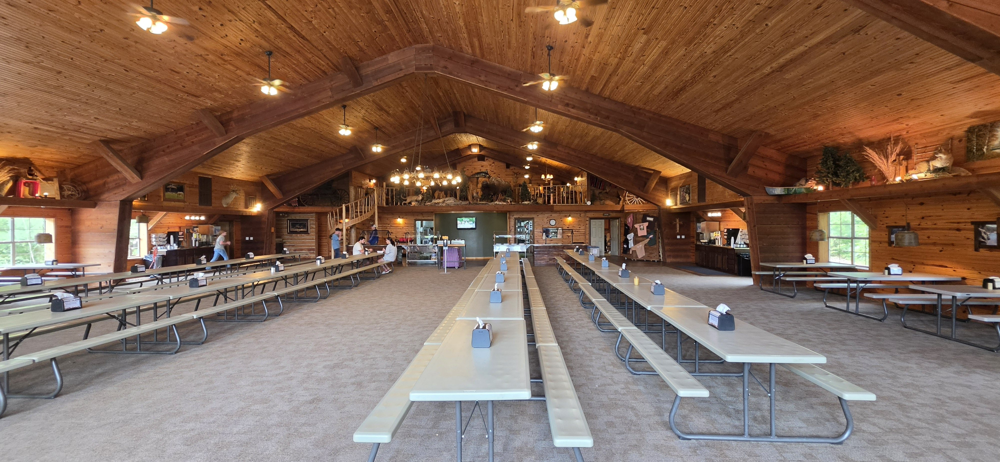

Listen first
Learn from people who understand their community, culture, strengths, and needs.
Go with purpose
Hope Sojourns brings willing people alongside trusted local ministries—creating room to listen, learn, encourage, and meet practical needs.
Our mission
We create purposeful journeys where service begins with humility. We follow the priorities of local leaders, contribute to work already underway, and invite every traveler to carry a deeper life of faith and service home.
Learn from people who understand their community, culture, strengths, and needs.
Bring useful skills, willing hands, encouragement, and respect to real ministry work.
Let the journey deepen faith, shape vocation, and build lasting habits of service.
Ways to go
Hope Sojourns creates opportunities for individuals, teams, organizations, students, and graduates to put their faith and abilities into action.
Join a Christ-centered team serving alongside trusted ministries. Trips combine practical help, cultural learning, daily reflection, and relationships that last beyond the itinerary.
See completed tripsTurn a company’s skills and team culture toward meaningful service. We shape experiences around partner priorities, professional strengths, and responsible community engagement.
Explore Hope SojournsConnect a field of study with Christian service through ministry engagement, communications, operations, digital media, travel planning, and community partnership.
Explore internshipsWhere we have served
Explore trips that have taken place and now have stories, devotionals, photographs, maps, or summaries on this site.
Serve alongside local ministries caring for people experiencing homelessness, displacement, and exploitation.
Explore the 2026 journey →
A planning visit to Shepherd of the Ozarks to prepare for future Hope Sojourns work teams.
Explore the SOTO journey →
The earlier Athens journey that helped shape a continuing commitment to serve with humility and human connection.
Explore the 2025 journey →No completed journeys match that filter.
Where might hope lead you?
Discover developing journeys, internships, and partnership opportunities through the official Hope Sojourns website.